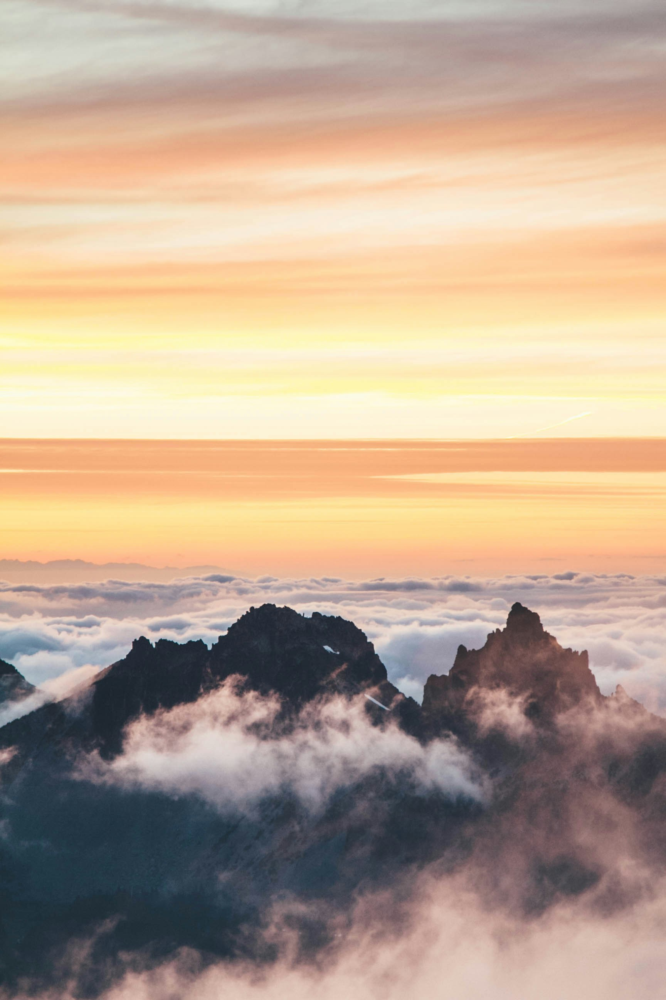
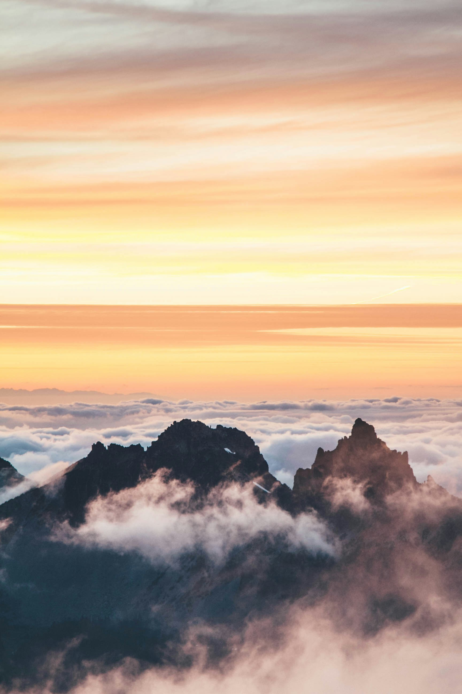

Article d'Angélina et Antoine L
"J'ai redécouvert la montagne"Inoxtag est un jeune YouTubeur français de 22 ans, devenu une figure emblématique de la scène numérique francophone. Connu pour ses vidéos énergiques et ses défis spectaculaires, il s'est récemment fait remarquer par son ascension de l'Everest.
L'ascension de l'Everest du youtuber Inoxtag a mené à la redécouverte de ces paysages délaissé à la fin de l'hiver. Un soudain intérêt pour l'alpinisme est né chez les jeunes depuis la sortie de son documentaire.

Inspiration pour la jeunesse L'exploit d'Inoxtag a suscité un intérêt renouvelé pour l'alpinisme chez les jeunes. Sa présence sur les réseaux sociaux a permis de démocratiser ce sport extrême, le rendant plus accessible et compréhensible pour un large public.
L'ascension d'Inoxtag a également mis en lumière les avancées technologiques dans l'équipement d'alpinisme. Les spectateurs ont pu découvrir les dernières innovations en matière de matériel, stimulant l'intérêt pour les aspects techniques de ce sport.
Cette expédition a permis de sensibiliser le public aux enjeux environnementaux liés à l'alpinisme. Les discussions autour de la préservation des écosystèmes montagnards ont gagné en visibilité, encourageant une pratique plus responsable de ce sport. L'ascension d'Inoxtag sur l'Everest a ainsi créé une synergie entre tradition alpine et culture numérique, ouvrant de nouvelles perspectives pour l'avenir de l'alpinisme
 


Réactions des Professionnels L'ascension n'a pas été sans critiques. Des alpinistes expérimentés, comme Pascal Tournaire, ont exprimé leur scepticisme quant à l'exploitation d'Inoxtag, soulignant que gravir l'Everest avec de l'oxygène est devenu relativement accessible.
De plus, certains professionnels dénoncent la marchandisation de l'Everest et la surfréquentation qui en résulte, craignant que de telles initiatives encouragent un tourisme de masse nuisible à l'environnement.
Pour les alpinistes et les randonneurs, les montagnes représentent un terrain d'aventure inégalé. Chaque sommet atteint est le fruit d'un effort physique et mental intense. Des chaînes de montagnes emblématiques comme l'Himalaya, les Alpes ou les Andes attirent des aventuriers du monde entier, désireux de repousser leurs limites. Cependant, ces expéditions ne sont pas sans risques. Les conditions météorologiques extrêmes, l'altitude et la difficulté du terrain exigent une préparation rigoureuse et un respect profond pour la nature.